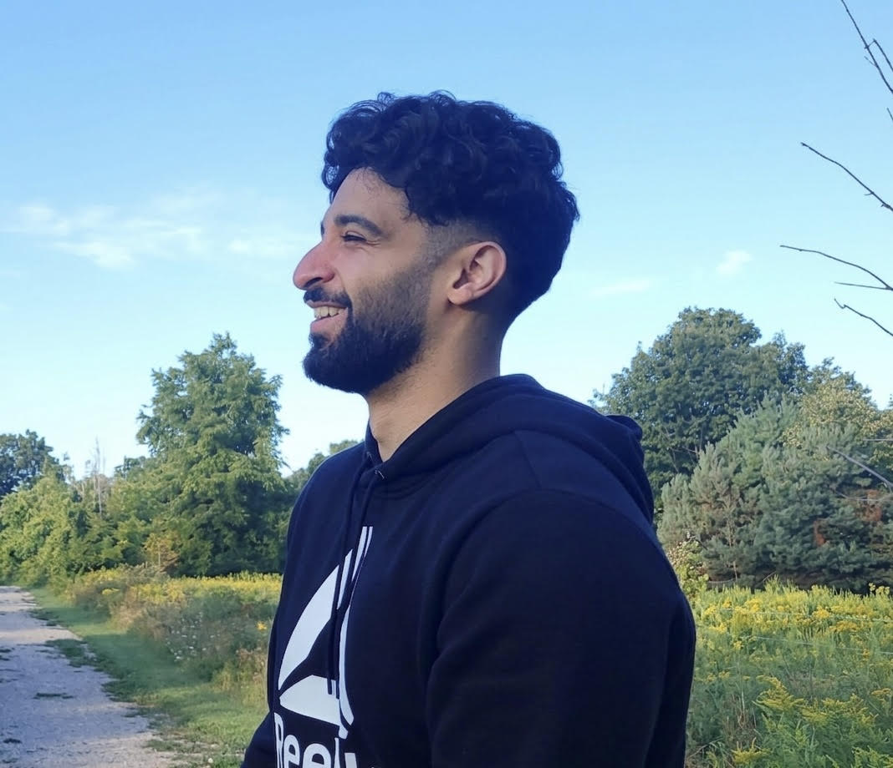
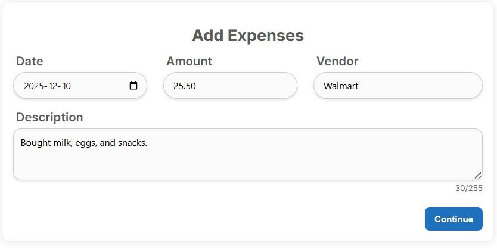
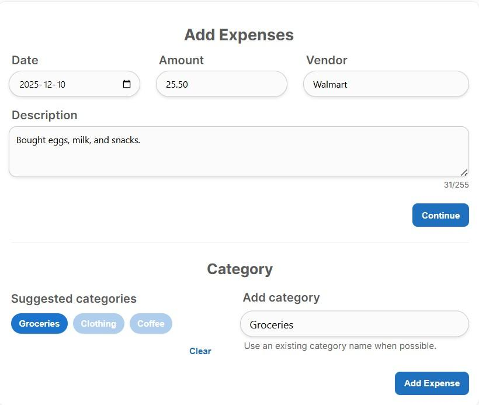
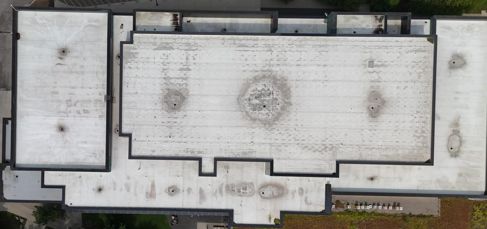
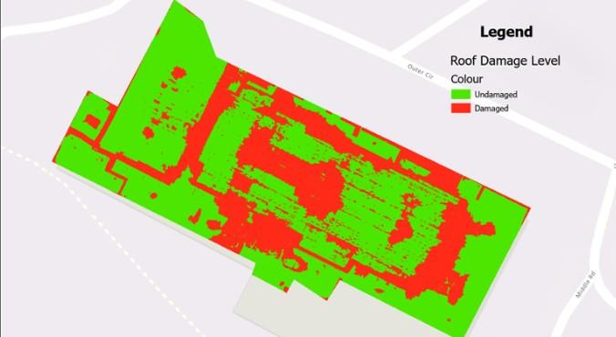
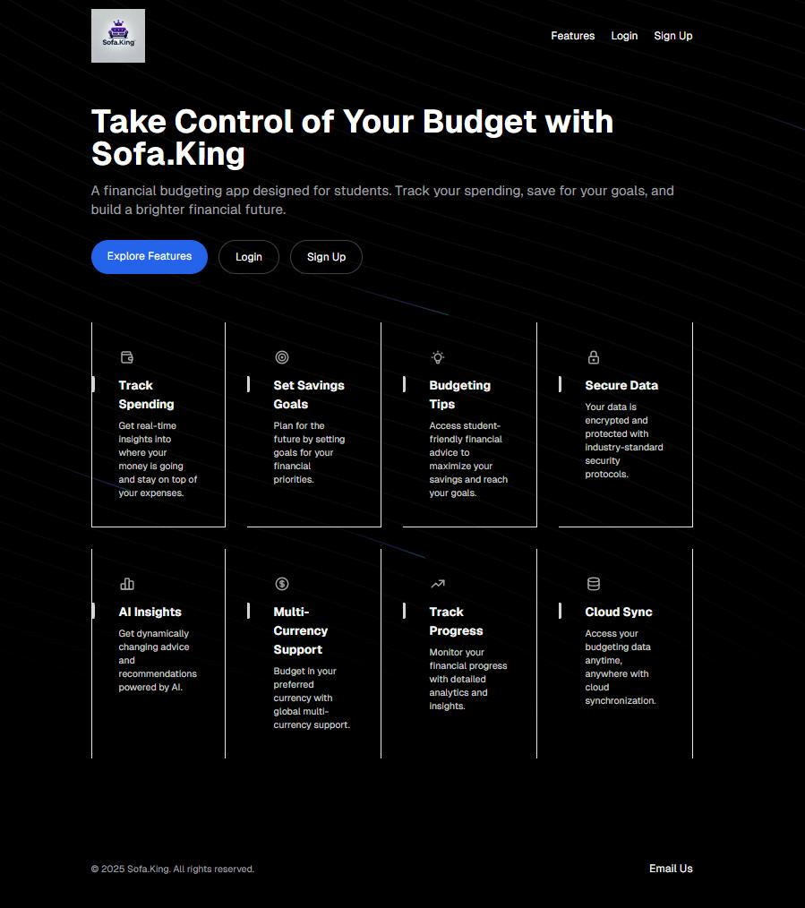

ML research scientist building models that survive the tests built to break them.
I work on applied machine learning for public-safety and epidemiological decision-making at the University of Toronto Mississauga, and contribute to a diffusion-policy pipeline for surgical robotics in a separate lab.
- Degree
- HBSc, UTM, class of 2026
- Based
- Toronto, ON
- Status
- Available now for ML / SWE roles

I graduated from the University of Toronto Mississauga in 2026 with an HBSc in Computer Science, Geospatial Data Science, and Mathematics. I'm now an ML research scientist working under Dr. Jenny Cui.
My work is applied machine learning on messy public data: epidemic forecasting, fire risk, emergency response. The through-line isn't benchmark-topping numbers. It's validation discipline and the willingness to kill a direction that doesn't earn its keep. Two of my three main projects report honest negatives as findings, one of them after six independent tests failed to beat a one-line baseline.
I care most about the habit of verifying a premise before building on it, and about designing evaluations that actively try to break my own claims. Separately, I contribute to the Medical Computer Vision and Robotics Lab on a diffusion-policy pipeline that learns visuomotor manipulation from demonstrations.
ML Research Scientist
I own each project end to end: data acquisition, cleaning, modelling, evaluation, manuscript writing, and peer-review submission. Every one is built to a publication standard, with the validation ladder and the negative results treated as first-class output rather than an appendix.
Physics-Informed ST-GNN for COVID-19 Forecasting
- Graph neural networks with compartmental disease mechanics embedded directly in the network, so the learned internals stay epidemiologically interpretable.
- The first direction tied a one-line baseline under six independent tests, so I killed it and pivoted, but only after verifying the new premise was worth building on.
- The result beats persistence by 5.1% MAE at two weeks and 8.8% at four, transfers zero-shot to held-out states, and independently recovers the roughly 48% Omicron severity drop reported in the literature.
Toronto Fire Risk
- Six public datasets on an H3 hex grid, behind a four-rung spatio-temporal validation ladder with leakage guards.
- The finding is a measurement rather than a score: roughly half the discriminable fire-severity signal exists only after an investigator's report, not at dispatch. It survives four target definitions and a weather control.
- My own leakage guards caught two real bugs, one of which flipped a conclusion. 26 tests assert behaviour, including one that fails if the blocking ever silently stops working.
Emergency Response Delay Prediction
- Roughly 1.75 million Toronto incidents from 2012 to 2024, fusing incident logs, the road network, weather, and area-level socio-economic data.
- Found silent data corruption in 36% of rows, where privacy-suppressed coordinates stored as zeros were poisoning a core feature and passing every median-based sanity check.
- Reported the proposed GNN as an honest null and explained why: its embeddings help the linear baselines but are redundant with what the trees already extract.
Toronto Urban-Safety Series
- Crash-severity and hotspot models over 640,000+ collisions, framed as rankers so a city can triage interventions, each paired with an equity audit.
- Two findings worth the papers: safety-dominant and equity-forward priority maps disagree, and single-mode hotspot maps each miss roughly half of the other modes' top-priority segments.
Edmonton Remote-Sensing Study
- Predicts pothole reports across eight years and roughly 400 neighbourhoods from Sentinel-2 imagery, terrain, and weather, using a negative-control outcome to bound reporting bias.
Medical Computer Vision and Robotics Lab
- A diffusion-policy pipeline that learns visuomotor manipulation from demonstrations, deployed on a da Vinci surgical robot.
Cadillac F1 Dashboard +
Overview
A four-person CS team, competing against finance and business squads, built a full-stack dashboard addressing Cadillac F1's 2026 launch risks. Placed top 10% at the Global Launch Challenge. The pitch combined predictive maintenance, real-time brand-sentiment monitoring, and an operational view of launch readiness in one product surface.
Highlights
- 19× ROI on predictive maintenance. A gradient boosting model at R² = 0.91 forecasts remaining useful life for eight car components, enabling £2.85M in savings per critical intervention.
- Real-time brand-sentiment monitoring built from scraped X and Reddit data, themed into dashboard panels for the comms team.
- Top 10% finish across a field of finance, business, and engineering teams.
Stack
Links
Resume Roaster +
Overview
A retrieval-augmented generation product live at amicooked.ca that delivers blunt, structured feedback on uploaded resumes. The serverless backend pairs Claude 3.5 Sonnet with FAISS retrieval on a Lambda-hosted Python pipeline, with a containerized chunk-and-embed step running in Docker.
Highlights
- 1,000+ resumes processed live with a 100% success rate.
- 35% latency reduction via Claude 3.5 Sonnet and RAG parameter tuning, bypassing AWS Lambda timeout limits.
- Cost engineered down to $0.011 per roast on a FAISS and Lambda serverless backend.
Stack
Links
ML-Powered Bill Categorizer +
Overview
A bill-categorization service designed for incremental learning. An SGDClassifier ingests user-corrected labels in real time, with a PostgreSQL schema built around a retraining feedback loop. NumPy and Pandas ETL keeps inference latency low.


Highlights
- 96% accuracy on 5,000+ simulated transactions, trained on 1,000+ labeled records.
- PostgreSQL schema designed for incremental retraining from user feedback.
- Vectorized preprocessing for low-latency inference.
Stack
Roof Damage Detection +
Overview
A computer-vision pipeline that quantifies roof damage from drone imagery. A U-Net segmentation model is paired with an OpenCV and GDAL ETL pipeline that neutralizes shadows and image artifacts before training. A sliding-window tiling strategy handles arbitrarily large GeoTIFFs and aggregates damage area in square metres.


Highlights
- 12% IoU improvement from shadow and artifact preprocessing.
- Data augmentation and weighted loss for rare damage classes.
- Sliding-window tiling lets the model run on full-size GeoTIFFs.
Stack
Student Budgeting Web App +
Overview
A personal-finance app aimed at students. Tracks 1,000+ transactions with dynamic recalculation logic, visualizes spending trends, and routes activity through an OpenAI-backed advisory engine that generates personalized financial plans.

Highlights
- 1,000+ transactions tracked with real-time trend visualizations.
- OpenAI API integration for personalized financial planning.
- RESTful APIs with dynamic recalculation logic.
Stack
Machine Learning
PyTorch, PyTorch Geometric, Hugging Face, XGBoost, LightGBM, Random Forest, scikit-learn, SHAP, OpenCV, NumPy, Pandas, SciPy, statsmodels, RAG and LangGraph
Geospatial and Data Engineering
GeoPandas, OSMnx, H3, Shapely, GDAL, ArcGIS Pro, REST and bulk API ingestion, geospatial ETL, provenance manifests
Systems and Infrastructure
Python, FastAPI, Flask, PostgreSQL, AWS Lambda and Bedrock, Docker, pytest, Java
Product and Frontend
TypeScript, React, Next.js, Angular, Node and Express, SQL, R
If any of this is relevant to what you're building, I'd be glad to talk.